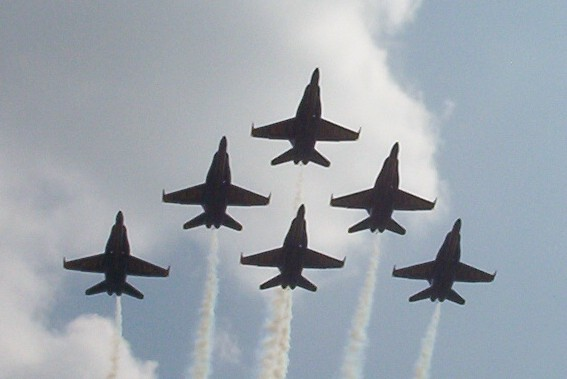

Maybe it's the way I was raised. You see, when I was much younger my father had a job with a small
charter airline, Capitol Air. One of the perks of a career
in the airline industry is the ability to travel for next
to nothing. Growing up I had the opportunity to travel to
many places, including England, Scotland, Germany,
Italy, and Hawaii.
Capitol Air was in operation from 1946 until 1984.
Lucky me, my dad also had a few friends who had earned their private licenses and I was also able to
fly on smaller General Aviation aircraft, like the Cessna 150, the Cessna 172, and the Beech Bonanza, on more
than one occasion. I fell in love with flying and would jump at the chance to climb into just about any aircraft for a ride.
To this day I love to fly, be it in a major commercial jet, a regional puddle jumper, or small GA aircraft.

Traverse City, MI Airport from Cessna 172.
This led me to follow a career in the airline industry, first as an Avionics Technician with the Navy, then in a
similar capacity with TWA in St. Louis. With the Navy I was able to travel to several new destinations including Azores,
Rota, Spain, Sicily, Crete, Israel, Bahrain, Halifax, Nova Scotia, and Puerto Rico. I was stationed at VRC-40 in Norfolk
working on the Grumman C-2A(R).

The Grumman C-2A(R) aircraft with VRC-40 logo
I'm always amazed that the larger jets are able to get off the ground. I remember when I was in Bahrain with
the Navy, our workspace was only a couple hundred yards from the end of the runway. I would watch as the Gulf Air
747s would start to slowly lumber down the runway and I would think to myself, "There's no way that something that big
is going to get off the ground, it can barely even get moving!" Without fail, by the opposite end it would be airborne.
These days I don't get many opportunities to fly anymore. My short career in the airline industry ended with the sale
of TWA to American Airlines in early 2001, followed by the 9/11 attacks later that year. So to scratch the aviation itch
I live it vicariously through the many airshow pilots that tour the country each year.
My favorite airshow performers (and maybe everybody else's also) are the Blue Angels. The Blue Angels are the United
States Navy Flight Demonstration Squadron, and are arguably among the best pilots in the world. I've had the pleasure
of seeing their performances several times now in shows in St. Louis, Cape Girardeau, Davenport, Iowa and Ypsilanti, Mi.

The Blue Angels at St Louis County Airshow
h5>
You'll find more than just military jets at your local airshow, though. Performers include everything from old Stearman
bi-planes and World War I replica aircraft to the Breitling FlightDemonstration Team.
And let's be honest... this looks like it would be fun to try, right?
So if any of this has your interest piqued may I suggest a visit to one of my favorite web sites...The Airshows Database Page
lists information for airshows all year long!
Some of My Favorite Airshow Sites